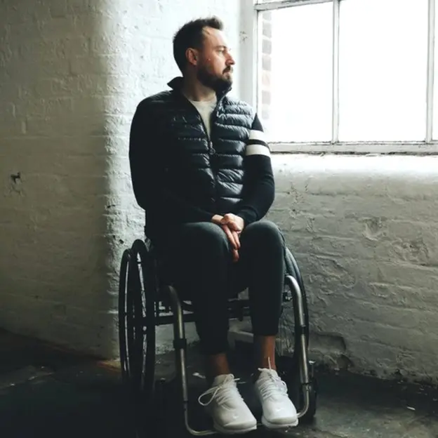
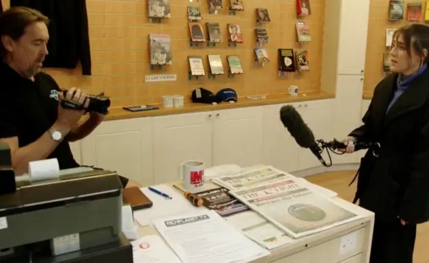
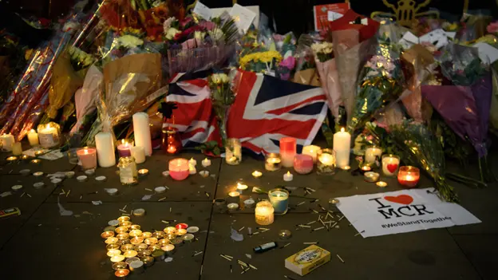

otras noticias
- Cómo un viaje a Noruega me hizo ver que estaba equivocado y que la Tierra no es plana
- Las imágenes falsas creadas con IA para intentar atraer el apoyo de los votantes negros hacia Trump
- La princesa Kate pide disculpas por la "confusión" que causó su foto retirada por las agencias de noticias por inconsistencias
- “Me arrepiento de haber publicado en línea que yo era Madeleine McCann”
- El Yimeilun, la estrategia con la que China busca influir en las elecciones de Taiwán al sembrar dudas sobre su alianza con EE.UU.
- Las afirmaciones falsas y engañosas amplificadas por Elon Musk en Twitter
- Donald Trump: cómo detectar imágenes creadas por inteligencia artificial como las fotos falsas del arresto del expresidente
- Quiénes son los "Ciudadanos del Reich", el grupo asociado con los golpistas arrestados en Alemania
Los sobrevivientes de ataques terroristas que son acusados de fingir por teóricos de la conspiración
Conspiracionistas que afirman que ataques terroristas cometidos en Reino Unido fueron escenificados están rastreando a los sobrevivientes en sus hogares y lugares de trabajo para ver si mienten sobre sus lesiones, según descubrió una investigación de la BBC.
Martin Hibbert, quien quedó paralizado de la cintura para abajo cuando él y su hija Eve quedaron atrapados en la explosión del Manchester Arena, en 2017, le dijo a la BBC que está preparando una denuncia por difamación contra un teórico de la conspiración que vive en Gales.
Richard D. Hall ha descrito cómo rastrea físicamente a los sobrevivientes del ataque, en el que murieron 22 personas y más de 100 resultaron heridas, para determinar si fue falso.
Dijo que espió a Eve desde un vehículo estacionado frente a su casa. En un video compartido con sus seguidores en línea, Hall mostró cómo configuró una cámara para filmar a Eve, quien quedó profundamente discapacitada y en silla de ruedas, para ver si de hecho puede caminar.
"Estoy a favor de la libertad de expresión", me dijo Martin Hibbert. "Pero se pasa de la raya cuando dices que soy actor o que no tengo una lesión en la médula espinal o que Eve no está discapacitada, que no está en silla de ruedas".
"No sabes hasta dónde va a llegar para obtener respuestas".
Hall sugiere que aquellos que murieron en el ataque están realmente vivos y residiendo en el extranjero. También promueve teorías de que varios otros ataques terroristas en Reino Unido fueron montados.
Exingeniero y diseñador de sitios web, gana dinero vendiendo libros y DVD que describen sus teorías, además de hablar en eventos y publicar videos en línea.
Sus videos suman millones de visitas y tiene decenas de miles de suscriptores en YouTube.
Cuando confronté a Hall en un puesto de venta que maneja, insistió en que me equivoqué acerca de cómo opera.
Fenómeno más amplio
Durante los últimos cinco meses he estado investigando para el programa BBC Panorama y para un podcast de Radio 4 a los teóricos de la conspiración que tienen como objetivo a los sobrevivientes del terrorismo en Reino Unido.
Mis investigaciones, junto con el testimonio de los afectados, muestran que las teorías y tácticas de conspiración como las implementadas por Hall son propias de un fenómeno más amplio que están experimentando los sobrevivientes y las familias en duelo.
Una víctima del ataque terrorista del puente de Westminster de 2017, que ha sido acosada en internet por trolls conspirativos, le dijo a la BBC que sobrevivir a un ataque terrorista ahora parece conducir inevitablemente a sufrir abusos.
Este tipo de teorías de conspiración, y el abuso que inspiran, se hacen eco de las de Alex Jones, el presentador estadounidense del programa y sitio web conspirativo Infowars, a quien este mes se le ordenó pagar casi US$1.000 millones a las familias de las víctimas del tiroteo en la escuela de Sandy Hook, después de afirmar falsamente que el ataque de 2012 fue un engaño.
El locutor Alex Jones deberá pagar US$965 millones a las víctimas de la escuela Sandy Hook en una nueva condena por difamación
El abuso en línea que describe los ataques terroristas como engaños, y a aquellos que resultaron heridos como "actores de crisis", parece estar en aumento desde la pandemia, según los sobrevivientes que hablaron con la BBC.
La mayor parte del abuso se ha perpetrado de forma virtual, pero las personas con las que he hablado dicen que temen por su seguridad porque el abuso también ha comenzado a afectar sus vidas fuera de internet.
Casi una de cada cinco personas en Reino Unido piensa que los sobrevivientes de ataques terroristas no están diciendo la verdad sobre lo que les sucedió, sugiere una nueva investigación de la BBC.
Un tercio dice que la pandemia les ha hecho sospechar más de las explicaciones oficiales de los ataques terroristas en el país.
La encuesta de más de 4.000 personas, ponderada para ser representativa de la población de Reino Unido y realizada a principios de este mes por King's College London, también sugiere que el 14% cree que el ataque en el Manchester Arena de 2017 probablemente involucró a "actores de crisis" que fingieron estar heridos.
Una investigación de BBC Monitoring encontró que docenas de videos que promovían afirmaciones falsas sobre el ataque de Manchester, que acumularon más de 300.000 visitas, todavía estaban en YouTube cinco años después del incidente.
Después de que la BBC señalara esto a YouTube, la empresa eliminó el canal de Hall y otro que promocionaba su contenido. "Apuntar a las víctimas y las familias de estos atroces ataques es abominable", dijo un portavoz de la empresa.
"La política de incitación al odio de YouTube describe pautas claras que prohíben el contenido que niega, trivializa o minimiza eventos históricos violentos, y eliminaremos los videos marcados que violen estas pautas".